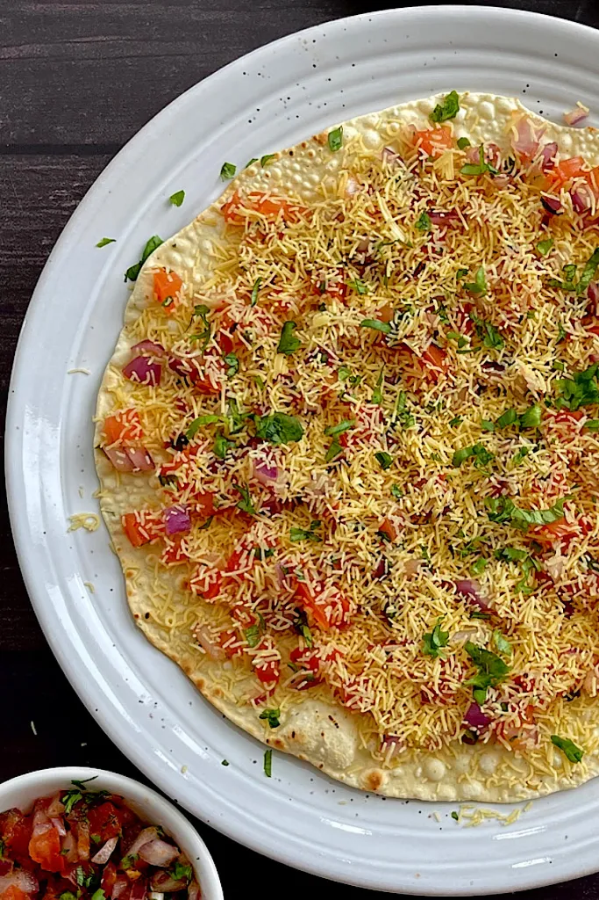

MASALA PAPAD

Description
One of the Most Popular starters in an Indian Restaurant. Very easy to make requiring only a few Ingredients
It is Light, It is Crunchy. Papad is usually made from rice or lentil flour and served Roasted or Fried
INGREDIENTS (1 Serving)
- 1 Papad
- 2-3 tbpsn Oil
- Salt
- Pepper
- Red Chilli Powder
- Chat Masala
- Half Chopped Onion
- Half Chopped Tomato
- Fresh Coriander
- Sev
RECIPE
- Heat the Oil and Deep Fry the Papad. Remove the Papad From Oil
- Add Salt and Pepper According to taste ( usually A pinch of Salt and Pepper is Enough.)
- Add Chopped Onions and Tomatoes. Spread it all over the Papad.
- Add Sev on top of Onions and Tomatoes.
- Top it off with some Chat Masala, Red Chilli Powder and Fresh Coriander
Return to LogBook